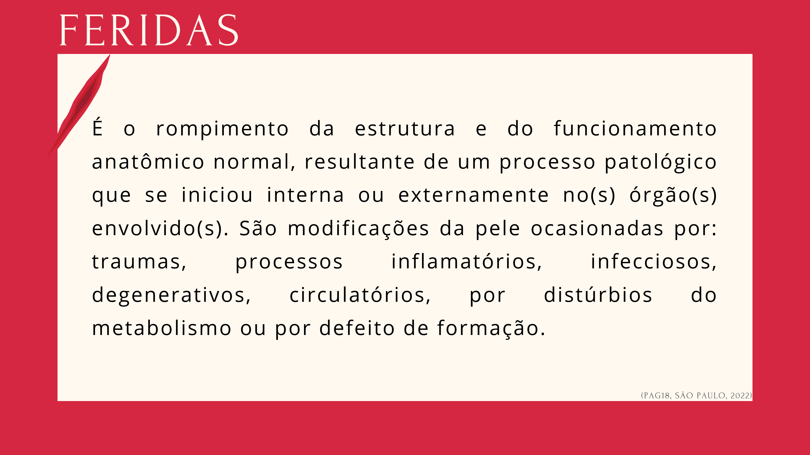

Módulo 01
O que é uma Ferida?
Compreender a definição e as causas das lesões cutâneas é o ponto de partida para a avaliação clínica sistematizada.
Definição
É o rompimento da estrutura e do funcionamento anatômico normal, resultante de um processo patológico iniciado interna ou externamente no(s) órgão(s) envolvido(s).
(Pág. 18, São Paulo, 2022)
Causas das modificações da pele
Traumas físicos (cortes, quedas, pressão)
Processos inflamatórios
Processos infecciosos
Processos degenerativos
Distúrbios circulatórios
Distúrbios do metabolismo
Defeito de formação congênito

